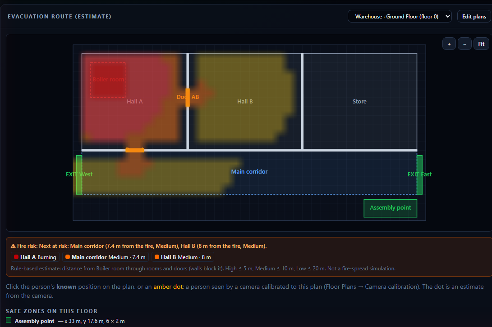

FIREVISION AI
Har feature kahan hai, kya click karna hai, kya bharna hai aur kya dikhega: cameras daalna, naqsha banana, calibration, evacuation raasta, risk heatmap, alerts, sprinklers, dispatch aur baqi sab.
A · Shuru
1. Ye Guide Kya Hai?
Ye guide batati hai ke FireVision AI ka har feature kaise use karna hai: kahan click karna hai, kya bharna hai, aur kya dikhega.
| Kaun si guide | Kis liye |
|---|---|
| Ye (Features guide) | Har feature use kaise karein |
| User guide | Install, aur har feature ka test + checklist |
| Project guide v5 | Andar se kaise kaam karta hai (code, AI, accuracy) |
Do qisam ke log:
| Role | Kya kar sakta hai |
|---|---|
| Admin | Sab kuch + Devices (cameras add/edit/delete) |
| Operator | Dashboard, Floor Plans, AI page, incidents resolve, dispatch. Devices nahi |
2. Shuru Karna
Ek click se chalana
cd C:\Users\m_fahad\Desktop\Project
.\start.ps1
Teen windows khulti hain: API, Dashboard, AI service. Aag ka demo bhi chahiye to .\start.ps1 -Simulator.
Login
- Browser: http://localhost:4200
- Email aur password daalein → Sign in.

Login 8 ghante chalta hai. Phir dobara login karna hota hai.
3. Dashboard: Har Hissa Kahan Hai

| Hissa | Kahan | Kya karta hai |
|---|---|---|
| Top bar | Upar | System ka haal: Hara "ALL SYSTEMS NOMINAL" = sab theek aur AI chal rahi hai. Peela "MONITORING DEGRADED · AI OFFLINE" (ya AI MODEL MISSING / CAMERA OFFLINE / AI DATA STALE / LIVE LINK DOWN; har 10 second, aur AI ke frames 8 second ruk jayein to foran). Incident khula ho to wajah saath likhi jati hai, jaise "ELEVATED RISK · 1 OPEN · AI OFFLINE" = koi incident nahi, lekin nigrani adhoori hai: is ka matlab "aag nahi" nahi, balke "dekha hi nahi ja raha". Peela "ELEVATED RISK" / laal "CRITICAL ALERT" = khule incidents. Phir Live/Offline, ghari (AM/PM), 🔊 alarm, Enable Alerts, Emergency Dispatch, Logout |
| Menu | Upar baen | Dashboard · Floor Plans · AI · Devices (sirf Admin) |
| KPI patti | Upar daen | Khule incidents, insaan, sab se zyada garmi aur dhuwan. Ek kamre (zone) ke kai camera ek hi log dekhein to ek dafa gine jate hain (sab se bari ginti), 2 log = 2, 6 nahi |
| Live Feeds | Beech | Har camera: naam (zone), AI ke boxes, chips |
| Sensor Telemetry | Daen | Har sensor ka gauge aur chhota graph |
| Smart Sprinklers | Daen | ON/OFF, Auto/Manual, Master |
| Alert Logs | Neeche | Incidents ki list + Resolve |
| Live Event Log | Neeche daen | Har waqia: SMS gaya, sprinkler chala, camera lost… |
| Incident History | Neeche | Aag ka graph aur poori history |
| Evacuation Route | Neeche | Naqsha, raasta, risk heatmap |
B · Setup: cameras, naqsha, calibration
4. Apne Cameras Daalna (Devices, Admin)
Kab: naya customer, ya naya camera laga.
- Menu → Devices.
- + Camera dabayein aur bharein:
| Field | Kya likhein |
|---|---|
| Id | Chhota pakka naam, jaise cam-gate (letters, digits, - ya _). Baad mein nahi badalta |
| Name | Screen wala naam, jaise "Main Gate" |
| Type | CCTV ya Drone |
| Zone | List se chunein. Naya zone sirf pehli dafa likhein, hamesha "Floor - Area": jaise "First Floor - Kitchen" (beech mein - zaroori, warna Save nahi hoga) |
| Stream link | Camera ka rtsp://user:pass@IP/..., MJPEG http://…/video (test camera, phone app), ya khali (simulated) |
| Browser video format | RTSP ke liye Simulated. MJPEG/HLS/MP4 link ho to wohi |
- Save. Camera foran dashboard par aa jata hai.
Edit: camera ki line par Edit → badlein → Save. Link rtsp://***@… dikhe to waise hi chhod dein, purana password mehfooz rehta hai.
Delete: Delete → confirm. Purane incidents history mein rehte hain.
AI khud camera uthati hai: link wala camera save kiya to AI service 1 minute ke andar us ki video dekhna shuru kar deti hai. Kuch aur likhne ki zaroorat nahi.
Zone ke naam ka tareeqa: "Floor - Area"
| Misaal | |
|---|---|
| Ground Floor - Lobby | Neeche ki manzil, lobby |
| Ground Floor - Warehouse | Neeche ki manzil, godaam |
| First Floor - Server Hall | Pehli manzil, server hall |
| Basement - Parking | Tehkhana, parking |
Alert aate hi pata chal jata hai kis manzil par kahan jana hai.
⚠️ Zone ka khayal: aag lagne par usi zone ke sprinklers aur naqshe ke danger zones chalte hain. Camera, sensor aur naqsha ek hi zone naam use karein. List se chunne par spelling galat nahi hoti.
5. Naqsha (Floor Plan) Banana
Kahan: Menu → Floor Plans.
A. Naya naqsha
- + New → "New floor plan" ban jata hai.
- Daen Plan settings: Name ("Ground Floor"), Building ("Warehouse"), Floor (0), Width aur Height meters mein (asal size, jaise 30 × 20).
- (Ikhtiyari) Upload image (PNG/JPG): apne naqshe ki photo background mein (5 MB tak). Ye sirf peeche dikhti hai, system is se deewarein khud nahi pehchaanta.
B. Cheezein draw karna
Toolbar se tool chunein aur naqshe par drag karein:
| Tool | Kya hai | Tip |
|---|---|---|
| + Room | Kamra / hall | |
| + Corridor | Gallery | |
| + Wall | Deewar (0.2 m moti) | Kamron ke beech |
| + Door | Darwaza | Deewar ke upar rakhein, warna raasta deewar paar nahi karega |
| + Exit | Bahar nikalne ka darwaza | Kam az kam ek zaroori |
| + Safe zone | Assembly point | Hara |
| + Danger zone | Khatarnak jagah (boiler, fuel store) | Laal |

C. Cheez badalna
- Select / Move → cheez par click.
- Daen Selected element: naam, X, Y, Width, Height (meters).
- Darwaza/Exit: Blocked / closed tick = band (raasta wahan se nahi guzarega).
- Danger zone: Active now (abhi khatra), ya Linked camera/sensor zone mein list se zone chunein (us zone mein incident khulte hi khud active).
- Hilana = drag (Select / Move tool). Chhota/bara karna = selected cheez ke neeche-daen cyan kona drag karein (kisi bhi tool par), ya daen Width / Height mein meters likhein. Mitana =
Deletekey.
D. Save
Save dabayein. Title par "unsaved" hat jaye. Zoom: mouse wheel ya + / − / Fit. Ek khana = 1 meter.
6. Camera Ko Naqshe Se Jorna (Calibration)
Faida: camera mein dikha insaan naqshe par khud amber nuqta ban jata hai.
- Floor Plans → naqsha kholein → Save.
- Daen Camera calibration → camera chunein.
- Camera ki snapshot Paint mein kholein. Farsh ke 4 kone chunein (koi 3 ek line mein na hon).
- Har kone ke liye: - Camera px: Paint neeche jo x, y dikhata hai. - Plan m ⌖ dabayein aur naqshe par wohi kona click karein.
- Save calibration.

Camera hil jaye to dobara karein. Remove se hata sakte hain.
C · Roz ka istemaal
7. Evacuation Raasta Dekhna
Kahan: Dashboard → neeche Evacuation Route (estimate).
- Upar list se naqsha chunein.
- Naqshe par wahan click karein jahan insaan hai, ya kisi amber nuqte (camera ka insaan) par.
- Hari teer: qareeb tareen mehfooz exit tak, saath mein "Distance 14.8 m · ~12 s".
| Halat | Kya dikhega |
|---|---|
| Aag (danger zone active) | Raasta khud badal kar aag se 1 m door |
| 1 m door raasta mumkin nahi | Laal warning: "NO route keeps the required 1 m clearance" |
| Koi raasta nahi | "No safe route…" |
| Pehle | Aag ke baad |
|---|---|
 |
 |
Waqt sirf andaza hai (faasla ÷ 1.2 m/s).
8. Aag Ka Risk (Agle Kaun Se Kamre)
Kab dikhta hai: jab naqshe ka koi danger zone active ho (zone mein incident khula ho).
Kahan: Evacuation Route panel, naqshe ke upar rang, aur neeche "⚠ Fire risk: Next at risk: …".
| Rang | Matlab |
|---|---|
| Gehra laal | Aag yahin hai |
| Laal | ≤ 5 m (High) |
| Narangi | ≤ 10 m (Medium) |
| Peela | ≤ 20 m (Low) |
| Bina rang | Door, ya deewar ke peeche (darwaza nahi) |

Incident Resolve karein to heatmap khud hat jata hai. Ye rule-based andaza hai (darwazon ke raaste faasla).
9. Live Cameras Aur AI
Kahan: Dashboard → Live Feeds.
| Cheez | Matlab |
|---|---|
| Main Lobby (Ground Floor - Lobby) | Camera ka naam aur zone |
| 🔴 LIVE / NO AI DATA | AI se frames aa rahe hain / nahi aa rahe |
| Laal dabba | Aag |
| Gray dabba | Dhuwan |
| Hara dabba | Insaan |
| Amber IN DANGER | Insaan khatre ke zone mein |
| Chips HUM / DANGER / FIRE / SMOKE / SIM DATA | Ginti, aag ka darja, test data |
- All / CCTV / Drone: filter.
- Heatmap tick: jahan aag/dhuwan dikha, wahan ka rang.
- Camera par click: bara karke dekhna.

10. AI Page: Photo Par AI Chalana
Kahan: Menu → AI.
- Baen: models ka haal (hara = dono loaded).
- Daen: Choose image… → aag ya insaan wali photo (JPG/PNG, 5 MB).
- Photo par dabbe aur neeche table: class, confidence, aur "Why" (AI ne kyun kaha).

Ye sirf preview hai: koi incident, alert ya sprinkler nahi chalta.
11. Alerts, Alarm Aur Incidents
Incident kab banta hai: camera par aag/dhuwan, sensor ki had paar, camera lost, ya Emergency Dispatch.
| Cheez | Kya hota hai |
|---|---|
| Alarm | Koi bhi incident khula ho to lagatar bajta hai |
| Alarm band | Incident Resolve karein, ya 🔊 button |
| Popup | High/Critical par laal popup |
| Alert Logs | Har incident: waqt, darja, jagah, source, aag, insaan |
| Resolve | Incident band. Alarm tab rukta hai jab koi khula na rahe |
| Open / All | Sirf khule, ya sab |
Darje: Low → Medium → High → Critical. Critical / insaan danger mein = emergency: SMS, Email, Push aur Auto sprinklers.

12. Emergency Dispatch (Haath Se Alert)
- Upar laal Emergency Dispatch.
- Zone, Severity, Message (jaise "Warehouse khaali karein").
- Sprinklers bhi chahiye to "Activate all sprinklers in this zone" tick.
- Dispatch Now: foran SMS/Email/Push aur ek naya incident.

13. Sensors Aur Sprinklers
Sensors (daen panel): har sensor ka gauge, limit aur graph.
| Halat | Matlab |
|---|---|
| Normal (hara) | Theek |
| Warning (peela) | Limit ke 80% tak |
| Alarm | Limit paar: High incident + Auto sprinklers |
| Critical | Bohat zyada: Critical incident + emergency alerts |
Sprinklers:
| Button | Kaam |
|---|---|
| Switch | Ek sprinkler ON/OFF |
| Auto | System aag par khud chala sakta hai |
| Manual | Sirf aap chalayenge |
| Master | Saare ek saath ON/OFF (confirm ke baad) |
Sprinkler khud OFF nahi hota: aag ke baad aap OFF karein.

14. Incident History Aur Logs
Kahan: Dashboard → Incident History & Logs.
- Upar incident chunein (ya "All incidents"), aur event type.
- Graph: camera incident par aag ka % (frame ka hissa), sensor incident par sensor ki readings.
- Logs: Opened, Escalated, FireMeasurement, PersonInDanger, EvacuationRoute, Resolved. Test data par SIMULATED, raaste par ESTIMATE.

15. Browser Notifications
- Upar Enable Alerts → browser poochhe to Allow.
- Ab High/Critical incident par Windows ke kone mein notification aata hai, dashboard ka tab band ho tab bhi (browser chal raha ho).
Server push ke liye .env mein Notifications__WebPush__… keys chahiye.
16. Camera Lost
Koi camera (jo frames bhej raha tha) 10 second chup ho jaye, jaise aag mein bijli chali gayi:
- Alert Logs mein "Camera lost: no frames from … for 10 s" (source Camera lost).
- Us zone mein aag ka incident khula ho to High, warna Medium.
- Camera wapas aaye to Live Event Log: "Camera … is sending frames again". Phir incident Resolve kar dein.
D · Demo, database, yaad rakhne wali baatein aur tools
17. Demo Chalana (Simulator Aur Live Camera)
Asli aag ke baghair demo:
.\start.ps1 -Simulator
Ya alag window mein:
cd C:\Users\m_fahad\Desktop\Project\backend
dotnet run --project Sentinel.Simulator -- --device-key <.env ka Device__ApiKey> --ignite "Ground Floor - Warehouse"
Cameras par nakli insaan aur Ground Floor - Warehouse mein aag. Alarm, alerts, sprinklers aur risk heatmap sab chalte hain. Har cheez par SIM DATA likha hota hai.
⚠️
.envmein asli SMS/Email settings hon to demo asli alerts bhej dega. Pehle Safe Test Mode (user guide, chapter 4).
Sab se aasan: automatic test (ek command)
Ye command khud sab karti hai: aag ki video chalati hai, camera aur naqsha banati hai, AI ke incident ka intezar karti hai, raasta badalna check karti hai, aur aakhir mein PASS/FAIL ki list deti hai.
- Safe Test Mode lagayein (user guide, chapter 4). Ye na ho to script khud ruk jati hai.
- Sab chalayein:
.\start.ps1(simulator nahi). - Nayi PowerShell window:
cd C:\Users\m_fahad\Desktop\Project\ai-service
.\.venv\Scripts\python tools\live_test.py
- Dashboard dekhte rahein. Taqreeban 1–2 minute mein aisa aayega:
PASS camera cam-live saved (Devices): 201
PASS floor plan 'Live Test' saved: 201
PASS camera calibrated to the plan: 200
PASS route before the fire: West exit, 5.26 m, ~4.4 s
PASS AI opened a fire incident: #1 Low after 54 s
PASS danger zone active: Lobby fire
PASS route avoids the fire: East exit, 13.25 m
PASS fire risk heatmap active: ...
8/8 checks passed.
- Dashboard par dekhein: Live Test tile par aag ki video aur AI ke dabbe, Alert Logs mein incident, alarm, aur Evacuation Route mein Live Test naqsha chun kar raasta.
- Dekh liya to us window mein Ctrl+C: camera, naqsha aur test incident khud saaf ho jate hain.
| Agar ye aaye | Matlab |
|---|---|
STOP: .env has real SMS/Email settings |
Pehle Safe Test Mode, phir API dobara chalayein |
STOP: the API / AI service is not running |
.\start.ps1 chalayein |
FAIL AI opened a fire incident |
AI service ki window dekhein; device key (start.ps1 deta hai) zaroori hai |
Apni video:
tools\live_test.py --video C:\videos\aag.mp4. Video mein log hon to AI unhein bhi P1, P2 ke saath track karegi.
Haath se poora live test: asli video, banda track, naqsha, raasta, aag
Is test mein sab kuch ek saath dikhta hai: camera tile par asli video, AI ke boxes aur P1, P2 jaise track number, naqshe par chalta hua amber nuqta, evacuation raasta, aur aag lagne par raasta badalna.
⚠️ Ye asli camera ki tarah chalta hai (SIM DATA nahi), is liye alerts aur sprinklers asli chalte hain. Pehle Safe Test Mode zaroor lagayein.
Qadam 1: Sab chalayein
cd C:\Users\m_fahad\Desktop\Project
.\start.ps1
(Simulator na chalayein, warna nakli aag mix ho jayegi.)
Qadam 2: Test camera chalayein (nayi PowerShell window)
cd C:\Users\m_fahad\Desktop\Project\ai-service
.\.venv\Scripts\python tools\mjpeg_camera.py 0
0= laptop ka webcam: aap khud camera ke saamne chalein.- Ya webcam ki jagah video file:
tools\mjpeg_camera.py C:\videos\log-chal-rahe.mp4(loop mein chalti hai). - Window mein likha aayega:
Test camera on http://127.0.0.1:8090/video. Ye window khuli rakhein.
Mobile se (ikhtiyari): Android par "IP Webcam" app → Start server → link hoga http://<phone-IP>:8080/video. Phone aur laptop ek hi WiFi par hon.
Qadam 3: Camera dashboard mein daalein
Admin login → Devices → + Camera:
| Field | Likhein |
|---|---|
| Id | cam-live |
| Name | Live Test |
| Zone | Ground Floor - Lobby (list se) |
| Stream link | http://127.0.0.1:8090/video (ya phone wala link) |
| Browser video format | Mjpeg |
Save → Dashboard. Tile par foran asli video, aur 1 minute ke andar AI ke hare dabbe P1 ke saath.
Qadam 4: Naqsha banayein
Floor Plans → + New → 20 × 10 m:
- + Corridor: poori lambai (0, 3 se 20 × 4).
- + Exit baen kinare (West), aur ek daen kinare (East).
- + Danger zone West exit ke qareeb → Linked zone list se
Ground Floor - Lobby→ Save.
Qadam 5: Calibration
Floor Plans → Camera calibration → cam-live. Camera ki tasveer mein farsh ke 4 kone chunein aur naqshe par wohi 4 jagah click karein (chapter 6) → Save calibration.
Qadam 6: Raasta dekhein
Dashboard → Evacuation Route → naqsha chunein. Camera ke saamne chalein: naqshe par amber nuqta chalega. Nuqte par click → hari teer West exit tak.
Qadam 7: Aag
Webcam ke saamne phone par aag ki video chalayein (ya Qadam 2 mein aag wali video file dein). Ya Emergency Dispatch → Zone Ground Floor - Lobby.
✅ Kya dikhna chahiye
- Live Test tile par asli video chal rahi hai
- Banda hare dabbe mein, P1 track number ke saath; chalne par bhi P1 hi rahe
- Naqshe par amber nuqta banda ke saath hilta hai
- Nuqte par click → hara raasta + "Distance … m · ~… s"
- Aag par: alarm bajay, Alert Logs mein incident, danger zone laal
- Raasta khud East exit par chala jaye (aag se 1 m door)
- Naqshe par risk heatmap ke rang
- Incident Resolve → alarm band, heatmap hat jaye
Band karna: test camera window mein Ctrl+C, phir Devices se cam-live Delete (warna "Camera lost" alert aayega).
Automatic test hum ne 3 dafa chala kar dekha (test database par): 8/8 pass. Haath wale test mein AI ne camera khud uthaya, banda P1 115 frames tak wahi id raha, raasta pehle West 5.6 m, aag ke baad East 12.9 m, aur aag wali video par AI ne khud incident khola. Laptop webcam (
0) wala hissa hum nahi chala sake.
18. Database Doosre PC Par Le Jana
| Kab | Command |
|---|---|
| Kaam khatam | .\database\save.ps1 → git add -A → git commit -m "kaam" → git push |
| Doosre PC par shuru | git pull → .\database\load.ps1 → "yes" |
load.ps1 database na ho to bana deta hai, ho to poora badal deta hai. Ek waqt mein ek hi PC par kaam karein.
19. Yaad Rakhne Wali Baatein
| ✅ Karein | ❌ Na karein |
|---|---|
| Demo se pehle purane incidents Resolve karein (warna alarm bajta rahega) | Ise asli fire alarm ki jagah lagana |
| Camera, sensor aur naqshe mein ek hi zone list se chunein | Camera ka Id badalna (AI isi se frames bhejti hai) |
| Camera hile to calibration dobara | Camera password config.json ya chat mein likhna |
| Test se pehle Safe Test Mode | Asli sprinkler/alarm bina ijazat jorna |
20. Tools: Kab Kaunsa Chalayein
| Aap ko kya karna hai | Tool | Command |
|---|---|---|
| Sab kuch chalana | start.ps1 |
.\start.ps1 |
| Aag ka nakli demo | Simulator | .\start.ps1 -Simulator |
| Laptop webcam ko camera banana | mjpeg_camera.py |
cd ai-service; .\.venv\Scripts\python tools\mjpeg_camera.py 0 |
| Ek command mein poora test | live_test.py |
cd ai-service; .\.venv\Scripts\python tools\live_test.py |
| Database doosre PC par | save.ps1 / load.ps1 |
chapter 18 |
| Purane zone naam badalna | rename-zones.sql |
sqlcmd -S localhost -E -C -d SentinelDb -i database\rename-zones.sql |
| AI ki accuracy naapna | evaluate.py |
Project guide, chapter 27 |
| Andhera/dhund mein AI kaisi hai | degrade.py + evaluate.py |
Project guide, chapter 27 |
| Browser mein screens check | Playwright | cd frontend; npm run e2e |
Har tool ki poori tafseel: Project guide v5, chapter 27.
Kuch nahi mila. Doosra lafz try karein.